4488-1 · H&E Good
Block 1: gastric tumour with the gastric margin
Scan quality: No problems found.
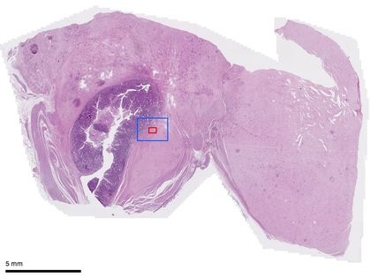
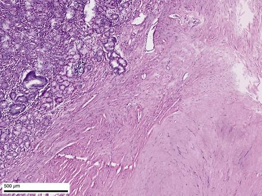
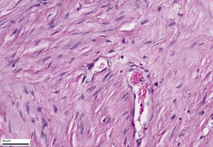
Open zoomable whole section · original SVS on Google Drive · 1.26 GB
36 whole-slide scans from the Shalimov Centre pathology department, received 04.11.2026 · previews, close-ups and technical quality · updated 07.11.2026
| Scan | Status | Note |
|---|---|---|
| 4488-4 · H&E | Problem | Severe defocus at the top and on the right (confirmed at full zoom); a rescan would help. Part of the section cut by the scan edge. |
| 4488-6 · H&E | Limited | Part of the tissue on the glass lies outside the scanned area. |
| 4488-6 · β-catenin | Limited | Part of the tissue on the glass lies outside the scanned area. |
| 4488-8 · H&E | Problem | The top fragment, about 19 mm², is almost entirely out of focus, with smaller soft patches elsewhere (confirmed at full zoom); a rescan would help. |
| 4488-9 · H&E | Limited | Part of the tissue on the glass lies outside the scanned area. |
| 4488-11 · H&E | Limited | The section is cut by the scanned area on both sides. |
| 4488-14 · H&E | Limited | A soft track about 2.5 mm² along a straight dotted line (looks mechanical; cause not established); folds; part of the section cut by the scan edge. |
| 4488-14 · Ki-67 | Limited | Typical areas are visibly softer than the sharpest scans; whether focus is adequate for counting is for a pathologist. |
| 4488-16 · H&E | Limited | Tissue cut by the stepped scan edge over about 4 mm (some straight edges may be real tissue margins). |
| 4488-19 · H&E | Limited | Moderately soft image; part of the tissue lies outside the scanned area. |
| cito 700 · H&E | Limited | Part of the tissue on the glass lies outside the scanned area. |
| 4222-2 · DOG-1 | Problem | Almost no tumour left on this section: a thin ring and one small fragment, about 0.5 mm² against 4.8 mm² on CD117. The fragment is sharp with clear staining. A rescan cannot add tissue. |
INTERPRETATION For each scan, a program picked the close-up area automatically: well-filled tissue, avoiding pale areas, with fine detail at the 80th percentile of that scan. They are typical well-focused areas, not the best or the worst, and not chosen for diagnostic content: they need not show tumour. Problem areas are shown on the quality page, and for three scans as a fourth image here. The blue box on each overview marks the ≈2 mm field and the red box the 40× field. Click any image for the full JPEG.
Jump to: Resection 4488/26 Biopsy 4222/26
Block 1: gastric tumour with the gastric margin
Scan quality: No problems found.



Open zoomable whole section · original SVS on Google Drive · 1.26 GB
Block 1: gastric tumour
FACT Report: Weak reaction in isolated cell groups (up to 1 %)
Scan quality: No problems found.
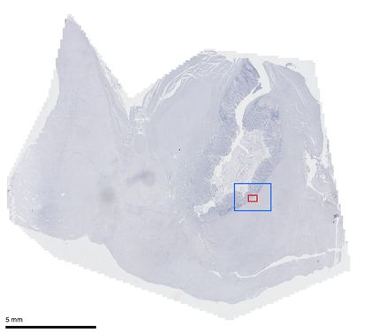
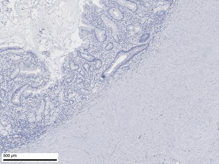
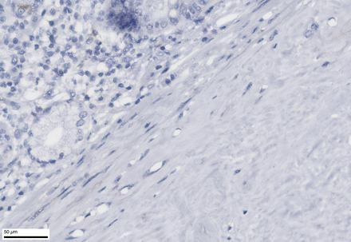
Open zoomable whole section · original SVS on Google Drive · 0.75 GB
Block 1: gastric tumour
FACT Report: Negative
Scan quality: No problems found.
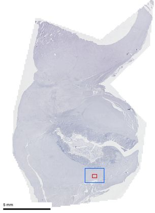
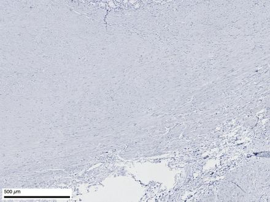
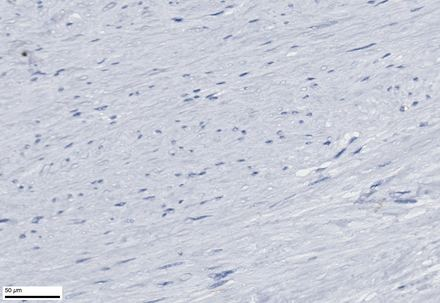
Open zoomable whole section · original SVS on Google Drive · 0.89 GB
Block 1: gastric tumour
FACT Report: 0 %
Scan quality: No problems found.
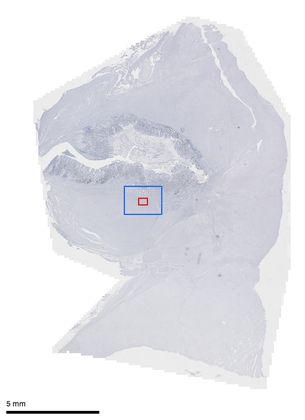
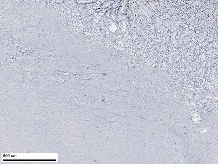
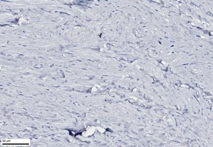
Open zoomable whole section · original SVS on Google Drive · 0.87 GB
Blocks 2–5: gastric tumour
Scan quality: Pale tissue in places; not a focus problem.
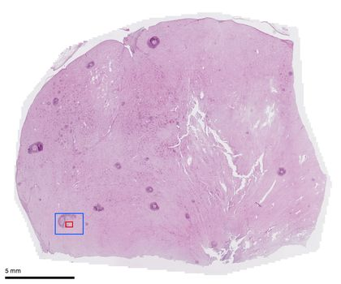
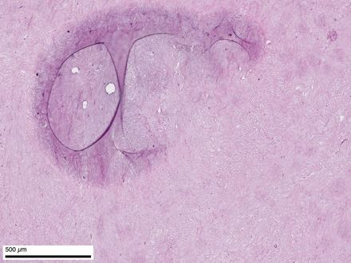
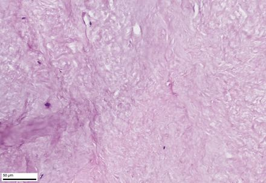
Open zoomable whole section · original SVS on Google Drive · 1.35 GB
Blocks 2–5: gastric tumour
Scan quality: Pale tissue, flagged by the automatic score but sharp on inspection; dark debris or marker about 0.7 mm; folds; part of the section cut by the scan edge.
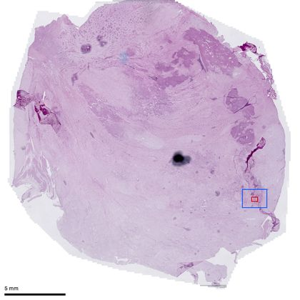
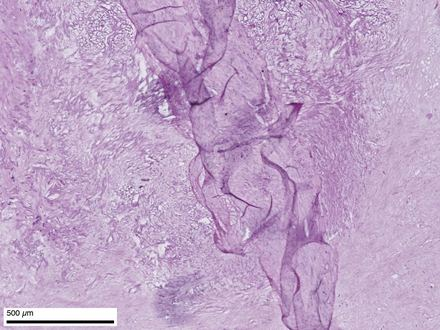
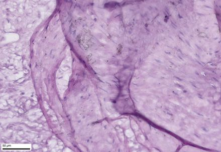
Open zoomable whole section · original SVS on Google Drive · 1.53 GB
Blocks 2–5: gastric tumour
Scan quality: Severe defocus at the top and on the right (confirmed at full zoom); a rescan would help. Part of the section cut by the scan edge.
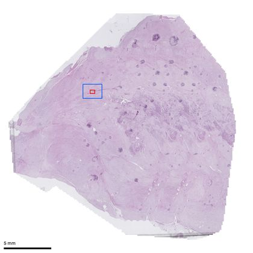
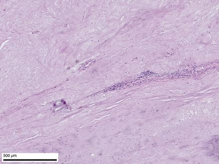
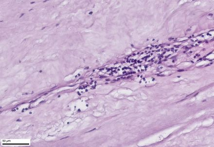

Open zoomable whole section · original SVS on Google Drive · 1.47 GB
Blocks 2–5: gastric tumour
Scan quality: Grey band along the bottom edge lies off the tissue.
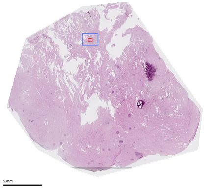
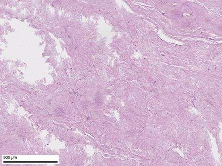
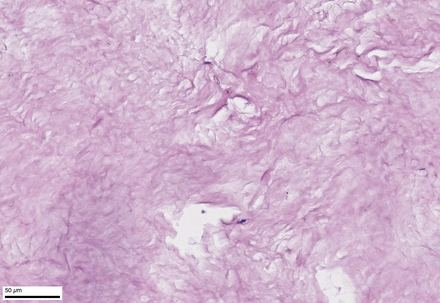
Open zoomable whole section · original SVS on Google Drive · 1.57 GB
Block 6: lesser-omentum fat next to the gastric wall (desmoid fibromatosis in the report)
Scan quality: Part of the tissue on the glass lies outside the scanned area.
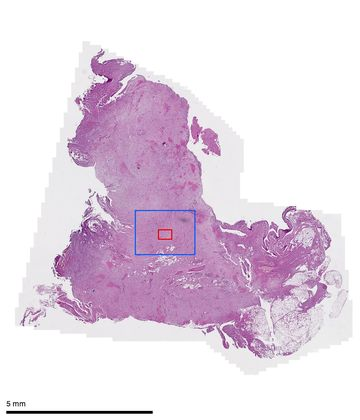
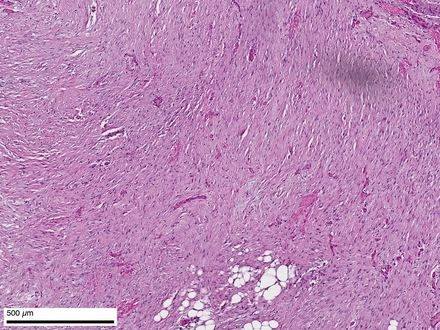
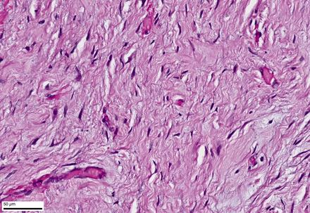
Open zoomable whole section · original SVS on Google Drive · 0.40 GB
Block 6: lesser-omentum fat next to the gastric wall
FACT Report: Positive nuclear reaction in fibroblasts
Scan quality: Part of the tissue on the glass lies outside the scanned area.
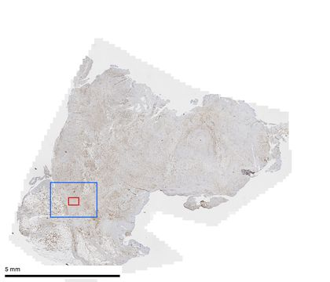
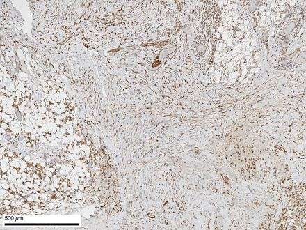
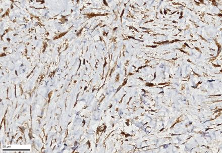
Open zoomable whole section · original SVS on Google Drive · 0.37 GB
Blocks 7–8: separately submitted fat with an induration (desmoid fibromatosis in the report)
Scan quality: One of two similar sections on the glass was scanned.
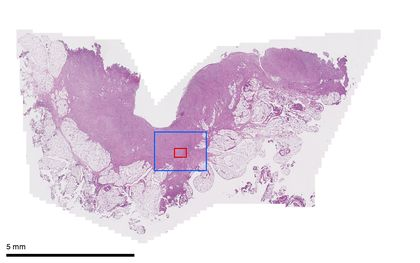
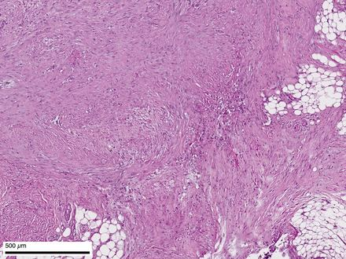
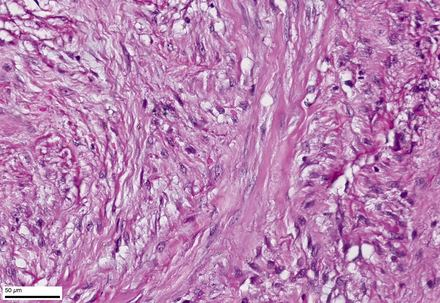
Open zoomable whole section · original SVS on Google Drive · 0.37 GB
Blocks 7–8: separately submitted fat with an induration
FACT Report: Positive nuclear reaction in fibroblasts
Scan quality: One of two similar sections on the glass was scanned.
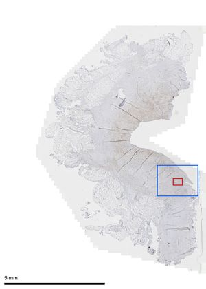
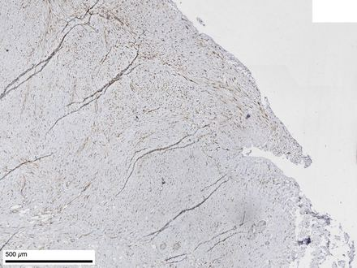
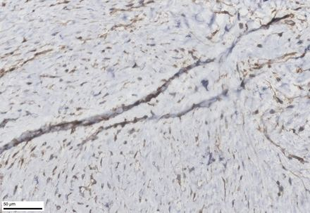
Open zoomable whole section · original SVS on Google Drive · 0.27 GB
Blocks 7–8: separately submitted fat with an induration
Scan quality: The top fragment, about 19 mm², is almost entirely out of focus, with smaller soft patches elsewhere (confirmed at full zoom); a rescan would help.
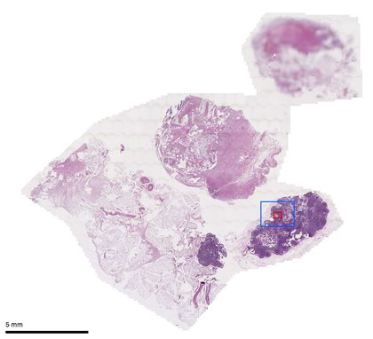
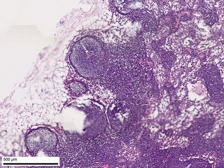
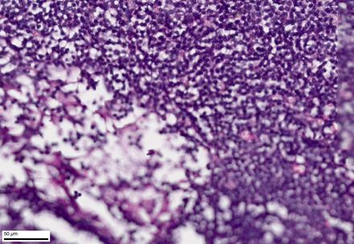

Open zoomable whole section · original SVS on Google Drive · 0.66 GB
Block 9: gallbladder
Scan quality: Part of the tissue on the glass lies outside the scanned area.
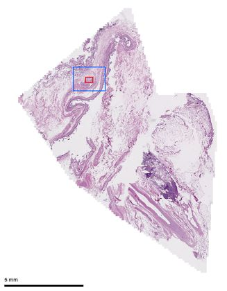
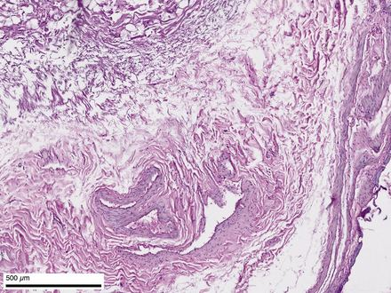
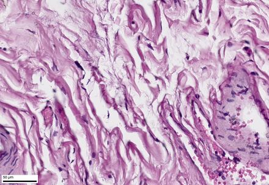
Open zoomable whole section · original SVS on Google Drive · 0.48 GB
Blocks 10–14: preserved tumour foci in the wall of the cystic tumour
Scan quality: Dark band at the bottom lies off the tissue; small debris; part of the section cut by the scan edge.
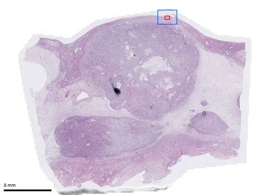
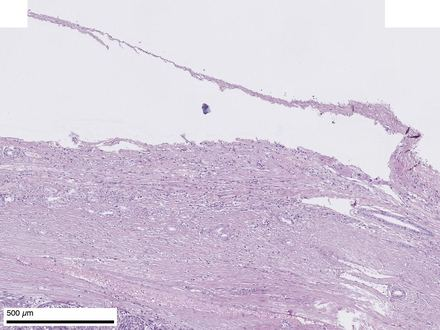
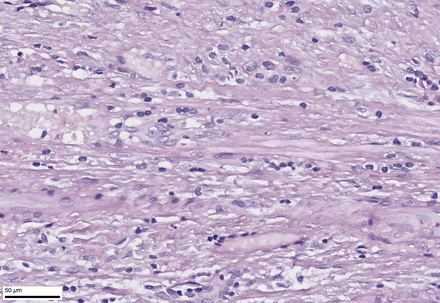
Open zoomable whole section · original SVS on Google Drive · 1.67 GB
Blocks 10–14: preserved tumour foci in the cyst wall
Scan quality: The section is cut by the scanned area on both sides.
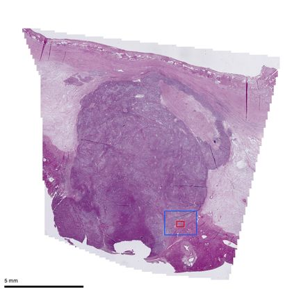
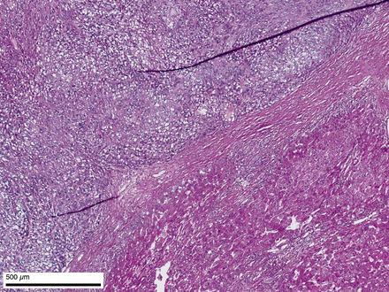
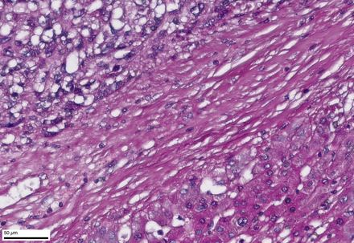
Open zoomable whole section · original SVS on Google Drive · 1.02 GB
Blocks 10–14: preserved tumour foci in the cyst wall
Scan quality: One of three similar sections on the glass was scanned.
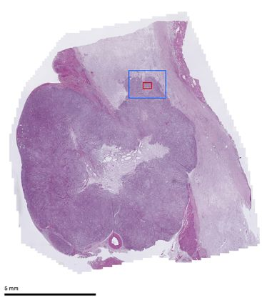
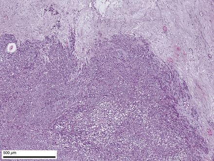
Open zoomable whole section · original SVS on Google Drive · 0.82 GB
Blocks 10–14: preserved tumour foci in the cyst wall
Scan quality: No problems found.
Open zoomable whole section · original SVS on Google Drive · 1.08 GB
Blocks 10–14: preserved tumour foci in the cyst wall
Scan quality: A soft track about 2.5 mm² along a straight dotted line (looks mechanical; cause not established); folds; part of the section cut by the scan edge.
Open zoomable whole section · original SVS on Google Drive · 1.61 GB
Blocks 10–14: preserved tumour focus in the cyst wall
FACT Report: Focally 15 %
Scan quality: Typical areas are visibly softer than the sharpest scans; whether focus is adequate for counting is for a pathologist.
Open zoomable whole section · original SVS on Google Drive · 1.13 GB
Blocks 15–17: the additional solid liver focus (6 × 4 × 4 cm)
Scan quality: Debris and folds.
Open zoomable whole section · original SVS on Google Drive · 1.44 GB
Blocks 15–17: the additional solid liver focus
Scan quality: Tissue cut by the stepped scan edge over about 4 mm (some straight edges may be real tissue margins).
Open zoomable whole section · original SVS on Google Drive · 1.74 GB
Blocks 15–17: the additional solid liver focus
Scan quality: Small debris.
Open zoomable whole section · original SVS on Google Drive · 1.46 GB
Block 18: margin of the main tumour
Scan quality: One of two similar sections on the glass was scanned.
Open zoomable whole section · original SVS on Google Drive · 1.43 GB
Block 19: loose masses from the cyst lumen
Scan quality: Moderately soft image; part of the tissue lies outside the scanned area.
Open zoomable whole section · original SVS on Google Drive · 0.41 GB
Block 20: liver without tumour
Scan quality: One of the sharpest scans.
Open zoomable whole section · original SVS on Google Drive · 1.34 GB
cito 699–700: express-histology material (report: node from the peritoneum; liver focus)
Scan quality: Black debris on the glass.
Open zoomable whole section · original SVS on Google Drive · 0.19 GB
cito 699: express-histology material
FACT Report: Positive nuclear reaction in part of the fibroblasts in one field
Scan quality: No problems found.
Open zoomable whole section · original SVS on Google Drive · 0.21 GB
cito 699: express-histology material
FACT Report: Negative
Scan quality: No problems found.
Open zoomable whole section · original SVS on Google Drive · 0.22 GB
cito 699: express-histology material
FACT Report: Positive in clusters of macrophages
Scan quality: No problems found.
Open zoomable whole section · original SVS on Google Drive · 0.21 GB
cito 699–700: express-histology material
Scan quality: Part of the tissue on the glass lies outside the scanned area.
Open zoomable whole section · original SVS on Google Drive · 0.03 GB
Biopsy 05.10.2026: gastric fragment, 1.5 × 1 × 1.5 cm (by shape; the report gives hyalinised tissue without viable tumour cells)
Scan quality: Mild focus bands.
Open zoomable whole section · original SVS on Google Drive · 0.35 GB
Biopsy 05.10.2026: liver trepan core, segments II–III (by shape and IHC)
Scan quality: One of about six similar levels on the glass was scanned.
Open zoomable whole section · original SVS on Google Drive · 0.06 GB
Liver trepan core
FACT Report: CD117 positive (biopsy report)
Scan quality: No problems found.
Open zoomable whole section · original SVS on Google Drive · 0.07 GB
Liver trepan core
FACT Report: DOG-1 positive (biopsy report)
Scan quality: Almost no tumour left on this section: a thin ring and one small fragment, about 0.5 mm² against 4.8 mm² on CD117. The fragment is sharp with clear staining. A rescan cannot add tissue.

Open zoomable whole section · original SVS on Google Drive · 0.06 GB
Liver trepan core
FACT Report: Ki-67 2 % (biopsy report)
Scan quality: One of two sections on the glass was scanned.
Open zoomable whole section · original SVS on Google Drive · 0.04 GB